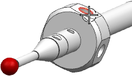
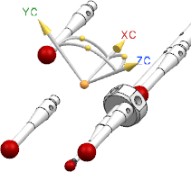
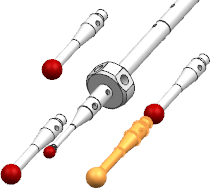
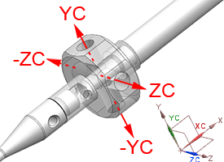
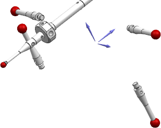

Add and position the remaining styli
You will now add and rotate the four remaining styli so that they are ready to be attached to the stylus hub.
-
In the Add Component dialog box, click Open
 .
.
-
In the Part Name dialog box, select A-5000-7630-01-C.prt, and then click OK.
-
In the Add Component dialog box, in the Duplicates group, in the Count box, type 4.
-
In the Placement group, from the Positioning list, select Move.
-
Select the Scatter check box, and then click Apply.
-
When the Point dialog box opens, click the arc center of any hole on the stylus hub component.

The four remaining styli scatter around the point you selected.

-
If necessary, in the graphics window, drag the XC, YC, and ZC handles so that the styli are not colliding with the probe assembly.
-
In the Move Component dialog box, click Apply.
-
In the graphics window or the Assembly Navigator, select a stylus.

-
In the Transform group, from the Motion list, choose Axis to Vector.
-
In the Specify From Vector row, from the Inferred Vector list, select .
-XC is the direction in which the styli are currently pointing.
-
In the Specify To Vector row, from the Inferred Vector list, select the direction the stylus should point.
Based on the probe’s Work Coordinate System (WCS), the vector direction of each styli from their assembled position is shown below.

-
In the graphics window, click a center point on the hub to use as a pivot point.
The actual pivot point is not important right now as the stylus will be assembled after it is rotated.
-
When the stylus is correctly rotated, click Apply.
-
Repeat steps 9-14 to position the three remaining styli to be assembled.
When all four styli are correctly rotated, they should point in four opposing directions.

Leave the Move Component dialog box open for the next activity.